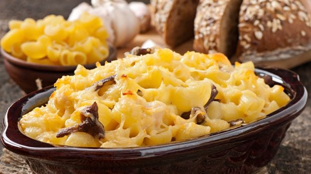

Cheese Onion Omlette

Also known as Macaroni and Cheese, this is one if the most favourite snack of kids and adults alike. With just two basic ingredients and practically five minutes of time you will be having the best cheese dish, in a mug!
Ingredients
- 1/3 Cup macaroni
- 3/4 cup cheddar cheese, shredded
- 2 tbsp milk
- 1/4 cup water
Steps
- Take macaroni in a bowl and add water to it.
- Microwave the bowl for about two minutes.
- Add milk and shredded cheese to the macaroni, stir a little.
- Microwave the bowl for another minute.
- Your delicious Mac & Cheese is ready eat hot.